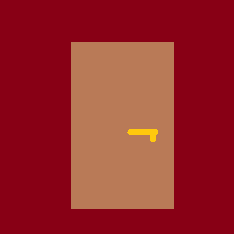

Gdy podchodzisz do kształtu, okazuje się, że jest to zwykły plecak. Prawdopodobnie należał on do kształtu, który uciekł przed momentem,
dlatego decydujesz się sprawdzić jego zawartość. W środku znajdujesz coś w rodzaju sprytnej lampki, mapę oraz pierścień. Ale nie przypomina ci on zwykłego
pierścionka, a raczej pudełko w kształcie pierścienia. Przez szybkę w nim zamontowaną dociera do ciebie blady blask. Czy to możliwe, żeby to właśnie tu
znajdował się fragment klucza, którego potrzebujesz? Jest szansa, że kształt chciał zniszczyć pierścień, aby samemu dobrać się do tego skarbu, jednak doprowadziło
go to do szaleństwa... Rzucasz okiem na mapę. Nie ma na niej, niestety, zbyt wiele. U góry strony widoczny jest tytuł "Orodruin", ale poza tym tylko
jedna szara plamka. Gdy odwracasz jednak mapę na drugą stronę, dostrzegasz tam ręczne notatki. Jedna z nich mówi "Obraz twoich kroków". OK, dosyć prosta wskazówka.
Kolejna natomiast zdaje się być tłumaczeniem. Mówi "Orodruin = Pieczara Ognia". No i pięknie, wszystko zaczyna wchodzić na swoje miejsce. Gdy rozglądasz się jeszcze
chwilę po otoczeniu dostrzegasz coś, co wygląda jak wejście do jaskini. Ta słynna Pieczara Ognia niepowinna być przecież daleko, więc decydujesz się tam rozpocząć swoją przygodę.

Gdy podchodzisz do wejścia, z jednej spójnej szarej plamki wyłania się obraz wejścia do jaskini, zaś sama plamka zdaje się dzielić na części pierwsze.